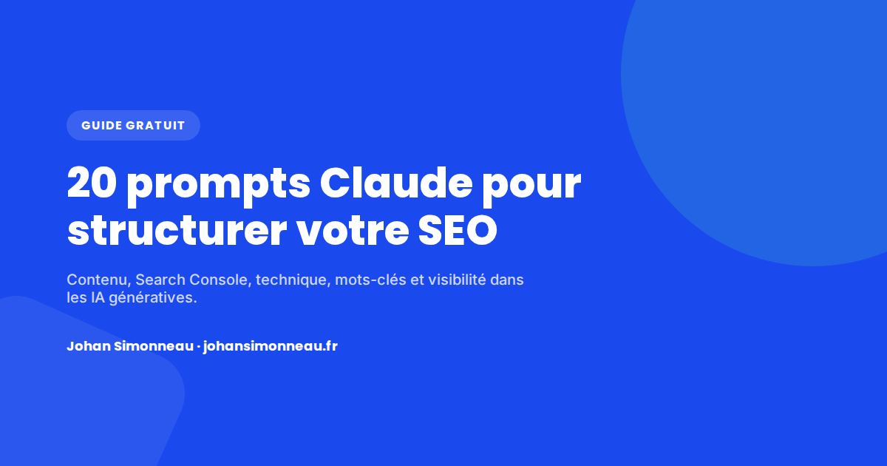
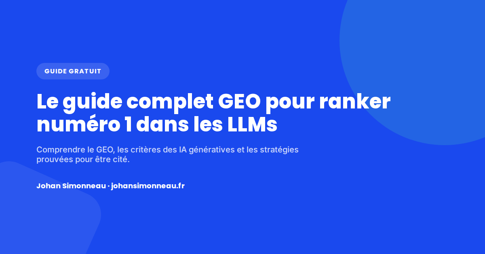

Ressources gratuites
Guides, diagnostic et blog pour muscler votre acquisition
Tout ce que je publie pour aider à structurer son SEO, sa visibilité dans les IA génératives et son growth marketing — sans email obligatoire pour la plupart, sans jargon inutile.
Guides

20 prompts Claude pour structurer votre SEO
Une boîte à outils prête à copier-coller pour transformer Claude en assistant SEO fiable : contenu, Search Console, technique, mots-clés et GEO.

Le guide complet GEO pour ranker numéro 1 dans les LLMs
SEO vs GEO, comment les LLMs choisissent leurs sources, les 5 stratégies qui marchent vraiment et une checklist actionnable.
Autres ressources
Diagnostic Growth Marketing gratuit
6 questions, 2 minutes : votre score de maturité par pilier (tracking, acquisition, SEO, GEO, CRO, pilotage) et la priorité à travailler en premier.
Blog
Articles SEO, GEO et growth marketing, écrits à partir de missions réelles — sans statistiques inventées, sans remplissage.